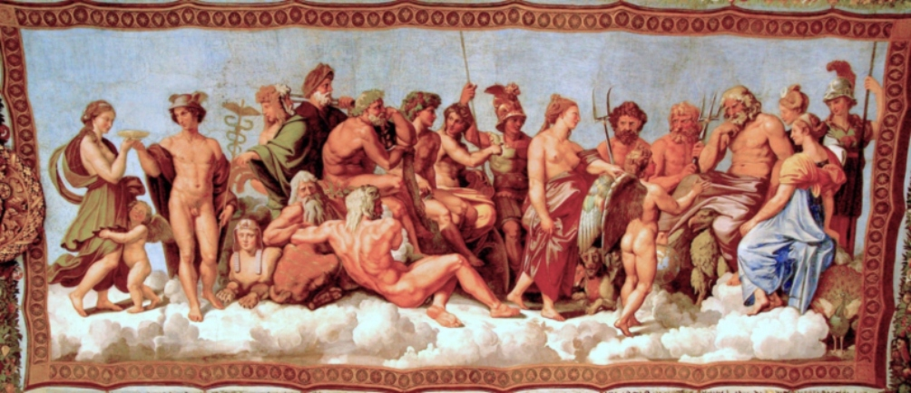

Mitología Griega
La mitología griega es como una gran colección de historias súper antiguas que nos llevan a un mundo lleno de dioses, héroes y bichos raros. Imagínate un montón de cuentos emocionantes que los griegos solían contar para explicar cómo funcionaba todo en su mundo. Había dioses poderosos como Zeus, el jefe de todos, y otros como Atenea, que era la diosa de la guerra estratégica y de la sabiduría.
Luego tenías a los héroes, como Hércules, que enfrentaban monstruos horribles. Y no podemos olvidar a las criaturas extrañas que aparecían en estas historias, como las gorgonas con serpientes en lugar de cabello o los cíclopes con un solo ojo.
Pero estas historias no eran solo para entretenerse; también ayudaban a los griegos a entender cómo era su mundo y a aprender lecciones sobre cómo vivir sus vidas. Por ejemplo, las historias de amor y celos entre los dioses podían explicar por qué a veces la gente se comportaba de manera tan rara en el amor.
En resumen, la mitología griega es como un montón de cuentos mágicos que han pasado de boca en boca durante miles de años, llenando de imaginación y sabiduría tanto al mundo antiguo como al nuestro.
Consejo de los Doce Olímpicos

Introducción a la Mitología Griega
La mitología griega es un vasto conjunto de historias y creencias que han influido profundamente en la cultura occidental durante siglos. Estas historias, que abarcan desde el origen del universo hasta las hazañas de héroes legendarios, ofrecen una ventana única a la cosmovisión y los valores de la antigua Grecia.
Los Orígenes del Universo y los Dioses Primordiales
En el principio, según la mitología griega, existía el Caos, un estado primordial de confusión y vacío. De este Caos surgieron Gaia (la Tierra), Urano (el Cielo) y otros dioses primordiales, quienes dieron forma al universo y engendraron a las primeras deidades.
Los Dioses Olímpicos
En la cima del panteón griego se encuentran los dioses olímpicos, una familia de deidades que residían en el Monte Olimpo y gobernaban sobre distintos aspectos del universo. Zeus, Hera, Poseidón, Atenea, Apolo y Afrodita son solo algunos de los miembros más destacados de esta asamblea divina.
Héroes y Heroínas
La mitología griega está repleta de héroes y heroínas cuyas hazañas asombrosas han sido transmitidas a lo largo de los siglos. Desde los Doce Trabajos de Heracles hasta las peripecias de Ulises en su viaje de regreso a Ítaca, estos personajes encarnan las virtudes de la valentía, la astucia y la determinación.
Criaturas Míticas
Las historias griegas también están pobladas por una variedad de criaturas míticas, desde los monstruos más temibles hasta seres fantásticos de belleza incomparable. Las gorgonas, los cíclopes, los centauros y los grifos son solo algunas de las criaturas que habitan el rico universo mitológico griego.